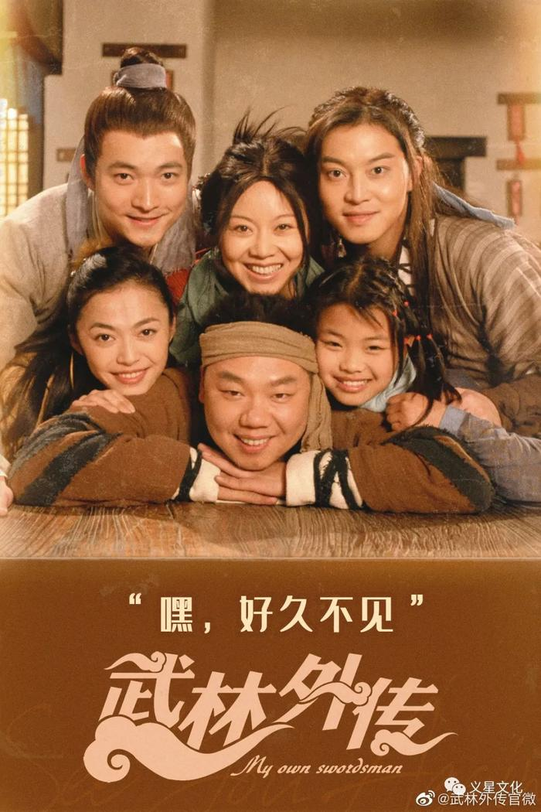

武林外传
2006年尚敬执导的电视剧


- 收藏
- 2200
- 点赞
- 22000
- 转发
- 12200
《武林外传》是由尚敬执导，闫妮、沙溢、姚晨、喻恩泰、姜超、王莎莎等主演的章回体古装情景喜剧。
该剧于2006年1月2日在CCTV8黄金档首播，并陆续在中国大陆各地方电视台重播。
该剧在香港由无线电视首播，在台湾由八大电视台首播。
该剧的故事围绕着一个在虚拟的明代（约在万历年间）的关中地区小镇七侠镇中同福客栈里的女掌柜佟湘玉和她的几个伙计展开。这群年轻人在同一屋檐下演绎了一幕幕经典的搞笑场面，在欢笑与眼泪中陪伴观众们一起渐渐成长。
本剧抨击了宣扬暴力的武侠文化，并对当时的社会现象进行了模仿、讽刺与批判。

基本信息
中文名
武林外传
主演
闫妮、沙溢、姚晨、喻恩泰、姜超、王莎莎、倪虹
外文名
My Own Swordsman
集数
80 集(电视播出80集，网络平台81集)
出品公司
北京联盟影业投资有限公司
每集长度
47分钟
导演
尚敬
编剧
宁财神、程娇娥
演员介绍
佟湘玉
演员
闫妮
寡妇门前是非多，而她这个只是在儿时见过丈夫的寡妇，是非少不了。身兼同福客栈的掌柜，和龙门镖局的千金，她从小娇生惯养锦衣玉食，下嫁衡山派掌门，却成了寡妇，从此要肩负起照顾尚未成年的小姑子的责任。所谓长嫂如母，她一直在努力当一名好嫂子兼幼教家，同时，身为掌柜，她还得全心全意去扶助身边的人们。这样的生活，她能适应吗？这样的责任，她挑得起来吗？身在江湖，一个手无缚鸡之力的弱女子，她该如何自处？一个门前是非多的女人，她怎样去追求对白展堂的那份爱情？

白展堂
演员
沙溢
浪子回头金不换，而他这个已经回了头的浪子，要到哪儿去换那块传说中的大金子？他本是传说中的盗圣，却不热爱本职工作，乃至退出江湖隐居此处，过上一种全新的生活。一个曾经有过惨痛历史的人，他想洗尽污点，但是那么多风起云涌的灿烂回忆，他真能放得下吗？一边是常年追缉他的女捕头，一边是始终在身边，且脉脉含情的佟掌柜，他该选择谁呢？

郭芙蓉
演员
姚晨
我是女侠我怕谁？此话不假，关键问题是，谁给她封的女侠？她的父亲是一代大侠，母亲是缉盗专家，可谓家世显赫。双亲的威名，始终把她笼罩在阴影之下。从小争胜好胜的她，选择了一条离家出走的道路，却在父亲终于同意让她再次闯江湖的第一站，却被扣在了同福客栈，从此开始了艰苦卓绝的杂役生涯。一个渴望行侠仗义的江湖小女子，一身娇横任性的毛病，她会习惯这种鸡毛蒜皮的生活吗？真正的江湖，跟她想象中的一样吗？勇敢和鲁莽，是同一个概念吗？随着岁月流逝，和内心的成长，她能变成一个真正的女侠吗？